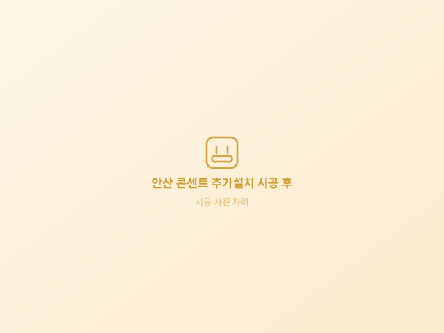

안산 콘센트 추가설치
고잔동·상록수·본오동·초지동 일대 가정집과 아파트를 방문해 콘센트를 늘려 드립니다. 30년 가까운 아파트 단지가 많아 전기 설비를 손볼 시기가 된 집이 많습니다. 안산 어느 동네든 벽 안쪽 배선과 분전반 상태까지 함께 보고 시공합니다.
- 주요 방문 권역
- 고잔동·상록수·본오동·초지동
- 자주 하는 공간
- 주방 조리대 · 거실 TV 벽 · 베란다 세탁기
- 상담 · 예약
- 010-2680-4538
평일·주말 08:00 ~ 20:00
안산 콘센트 추가설치 시공 전 · 후

시공 후안산 콘센트 증설, 이런 상황에서 많이 찾으십니다
안산에서 연락 주시는 분들의 사정은 대체로 비슷합니다. 30년 가까운 아파트 단지가 많아 전기 설비를 손볼 시기가 된 집이 많습니다.
가장 자주 듣는 이야기는 구축이라 콘센트가 헐거워지고 접촉이 나빠진 경우입니다. 멀티탭을 하나 더 사서 넘기기 쉽지만, 안산에서 실제로 가 보면 한 자리에 부하가 몰려 열이 나거나 차단기가 내려가기 직전인 집이 적지 않습니다.
안산 콘센트 증설은 벽에 구멍 하나 뚫는 일로 보이지만, 실제로는 분전반에서 그 자리까지 전기를 어떻게 끌고 갈지 정하는 일입니다. 헐거운 콘센트는 그냥 두면 열이 납니다. 증설과 함께 노후 콘센트 교체를 같이 안내드리는 이유입니다.
안산에서 자주 하는 콘센트 추가설치 공간
고잔동·상록수·본오동·초지동 가정집에서 특히 문의가 많은 자리는 아래 네 곳입니다.
안산에서도 후드 옆이나 타일 마감선을 따라가면 벽을 크게 건드리지 않고 늘릴 수 있습니다.
안산 현장에서 보면 TV·셋톱박스·사운드바·공유기까지 붙으면 두 구로는 감당이 안 됩니다.
안산 가정집에서는 건조기는 소비 전력이 커서 기존 콘센트를 나눠 쓰면 차단기가 내려갑니다.
안산 기준으로도 USB 일체형으로 하면 어댑터가 자리를 차지하지 않습니다.
안산 콘센트 추가설치는 자리마다 방법이 다르고, 같은 단지라도 동과 평형에 따라 벽 속 배선이 달라 방문해서 보고 정하는 편이 확실합니다.
안산 콘센트설치 비용은 이렇게 정해집니다
안산 콘센트설치 비용은 콘센트 개수만으로 정해지지 않고, 아래 네 가지가 금액을 가르는 기준이 됩니다.
배선 거리
분전반이나 기존 콘센트에서 새 자리까지의 거리가 멀수록 자재와 시간이 늘어나기 때문에, 안산 현장에 도착하면 이 경로부터 확인하고 말씀드립니다.
벽 구조
콘크리트인지 석고인지 조적인지에 따라 작업 방식이 달라지는데, 안산은 집집마다 벽 상태가 달라 눈으로 보기 전에는 금액을 단정하지 않습니다.
회로 여유
분전반에 차단기를 더 넣을 자리가 있는지에 따라 범위가 달라지며, 안산에서 오래된 집은 이 부분에서 비용이 갈리는 경우가 많습니다.
콘센트 종류
일반 2구인지 매입형·방수형·USB 일체형인지에 따라 자재비가 달라지므로, 안산 상담 때 쓰실 가전을 알려주시면 맞춰 안내드립니다.
안산 콘센트설치 비용은 현장을 보고 알려드립니다. 전화로 대략적인 범위는 말씀드릴 수 있지만, 안산까지 방문해 벽과 분전반을 확인한 뒤에 확정 금액을 안내드리는 것이 서로 정확합니다. 안산 현장 견적을 보시고 진행하지 않으셔도 괜찮습니다.
안산 콘센트설치 업체, 이렇게 확인해 보세요
안산 콘센트설치 업체를 고를 때 금액만 비교하면 나중에 아쉬운 일이 생기는데, 아래 다섯 가지만 확인하셔도 크게 어긋나지 않습니다.
- 전화만으로 금액을 확정하지 않고 안산까지 직접 방문해 눈으로 보고 견적을 내는지 확인해 보세요.
- 먼 데서 오면 출장비가 붙거나 일정이 자꾸 밀리기 때문에, 안산 안에서 움직이는 곳인지 미리 물어보시는 편이 좋습니다.
- 안산처럼 집 연식이 섞인 지역일수록, 콘센트만 늘리자고 하는지 분전반과 접지 상태까지 함께 보는지 살펴보는 것이 중요합니다.
- 작업이 끝난 뒤 안산 현장의 분진과 자재까지 정리하고 가는지도 미리 확인해 두시면 좋습니다.
- 안산 시공 뒤에 문제가 생겼을 때 연락이 닿아야 하므로 사업자등록번호와 연락처가 분명한 곳인지 보세요.
안산 콘센트 추가설치 진행 순서
전화·문자 상담
안산 어느 동네인지와 놓으실 가전을 알려주시고, 벽면 사진을 문자로 함께 보내주시면 훨씬 정확하게 안내드릴 수 있습니다.
현장 확인
안산 현장에 방문해 기존 배선과 벽 구조를 보고 현장 상황에 최대한 맞게 고객님의 의견에 맞추어 시공해 드립니다.
견적 안내 후 결정
작업 범위와 비용을 먼저 알려드리고 결정하신 뒤에 진행하며, 안산까지 방문한 뒤라도 보시고 그만두셔도 괜찮습니다.
시공·정리
주변을 보양하고 작업한 뒤 분진까지 정리하며, 안산 시공은 전원을 넣어 함께 확인하는 것으로 마무리합니다.
안산 인근 지역
안산과 가까운 지역도 같은 기준으로 방문합니다. 안산 콘센트설치 업체를 찾으시다 아래 지역이 더 가까우시면 해당 페이지를 참고하세요.
안산 콘센트 추가설치 자주 묻는 질문
네, 고잔동·상록수·본오동·초지동 전체 방문합니다. 안산 상담시간은 평일·주말 08:00 ~ 20:00이며 일정은 전화로 조율해 드립니다.
배선 거리와 벽 구조, 회로 여유에 따라 달라지기 때문에 안산 현장을 보고 작업 범위를 정한 뒤 금액을 알려드립니다. 안내받으신 뒤에 결정하시면 됩니다.
안산 시공에서도 필요한 만큼만 건드립니다. 헐거운 콘센트는 그냥 두면 열이 납니다. 증설과 함께 노후 콘센트 교체를 같이 안내드리는 이유입니다.
단지마다 작업 가능 시간과 소음 규정이 달라 안산 방문 전에 미리 확인해 드리고, 필요하면 협의한 뒤 일정을 잡습니다.